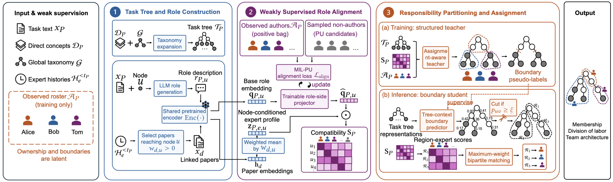
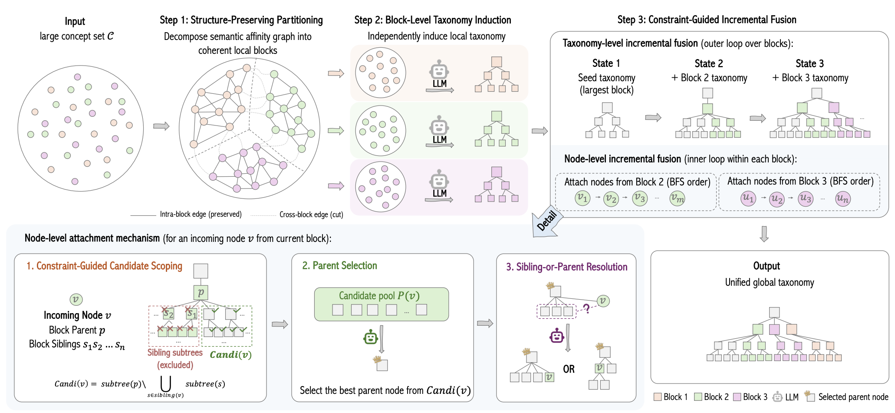
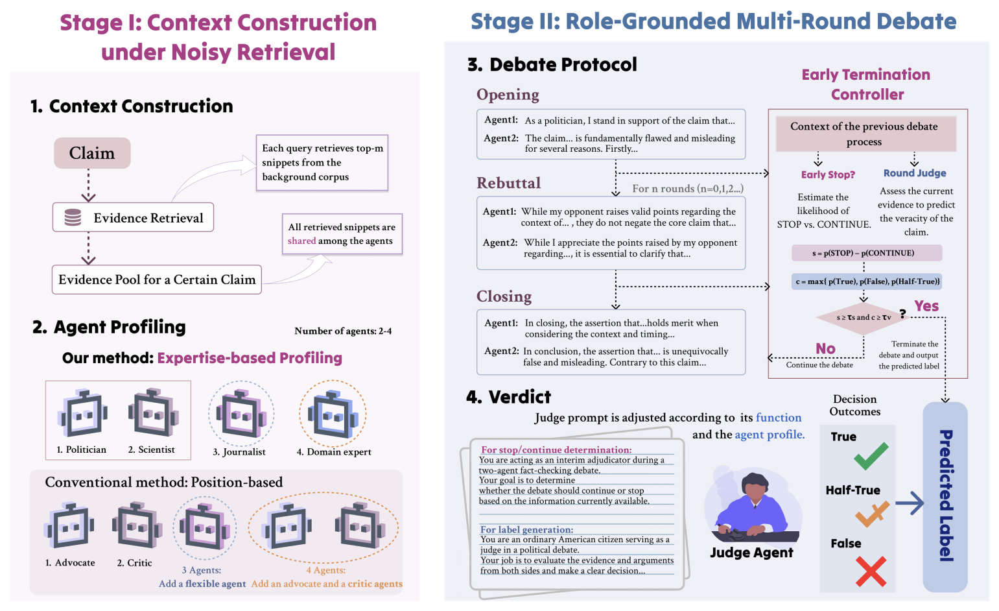

Hi! I am Yirui Zhang, a PhD candidate in the School of Computing at the National University of Singapore, advised by Anthony Kum Hoe Tung. My research explores how AI can help people connect across disciplines and backgrounds, a goal I pursue through DeepConnect. My broader work focuses on large language models, multi-agent reasoning, knowledge discovery, and structured information.
I received my B.Eng. in Communication Engineering from Beijing University of Posts and Telecommunications, where I conducted research under the supervision of Jie Li and Linmei Hu.
🔥 News
- [Nov 2026] One paper was accepted to KDD 2027.
- [Aug 2026] Won first place in the Long-Form Analogy Evaluation Challenge.
- [Aug 2026] Two papers were accepted to EMNLP 2026.
- [Aug 2026] Presented a poster at NUS AI Research Day 2026.
- [Dec 2025] Passed my PhD Qualifying Examination.
📝 Publications

Who Does What? Structured Team Formation via Weakly-Supervised Responsibility Discovery
Yirui Zhang, Yixuan Tang, Hang Feng, Anthony Kum Hoe Tung
TaxaResp predicts both who should join a team and what each member should do, learning connected responsibility regions from historical team rosters without role-level labels.

SPARROW: Scalable Taxonomy Induction via Structure-Preserving Partitioning and Constraint-Guided Merging
Yirui Zhang, Yixuan Tang, Yandong Sun, Mong-Li Lee, Anthony Kum Hoe Tung
SPARROW scales taxonomy induction by preserving structure while partitioning large concept sets, inducing local hierarchies, and merging them under constraints that reduce fragmentation and misplaced parent relations.

Debating the Unspoken: Role-Anchored Multi-Agent Reasoning for Half-Truth Detection
Yixuan Tang, Yirui Zhang, Hang Feng, Anthony Kum Hoe Tung
RADAR uses role-specific agents to debate claims over shared evidence, then lets a judge classify half-truths. An adaptive controller stops the debate when enough evidence is available.
- KRA: K-Nearest Neighbor Retrieval Augmented Model for Text Classification, Jie Li, Chang Tang, Zhechao Lei, Yirui Zhang, Xuan Li, Yanhua Yu, Renjie Pi, Linmei Hu, Electronics 2024.KRA retrieves similar training examples at inference time, augments and weights them, and combines their labels with a text classifier to improve classification across several model types.
- BaThe: Defense against the Jailbreak Attack in Multimodal Large Language Models by Treating Harmful Instruction as Backdoor Trigger, Yulin Chen, Haoran Li, Yirui Zhang, Zihao Zheng, Yangqiu Song, Bryan Hooi, arXiv 2024.BaThe treats harmful instructions as backdoor triggers and uses a virtual rejection prompt to defend multimodal language models against jailbreaks, including attacks unseen during training.
- Knowledge Graph Enhanced Language Models for Sentiment Analysis, Jie Li, Xuan Li, Linmei Hu, Yirui Zhang, Jinrui Wang, ISWC 2023.Combines commonsense and sentiment knowledge in a heterogeneous graph and fuses graph representations with language-model features to improve sentence-level sentiment analysis.
- ChatLLM Network: More Brains, More Intelligence, Rui Hao, Linmei Hu, Weijian Qi, Qingliu Wu, Yirui Zhang, Liqiang Nie, AI Open 2023.Connects multiple language models in layers so they can exchange perspectives and feedback, using language-based backpropagation to improve collective problem solving.
- Text3D: 3D Convolutional Neural Networks for Text Classification, Jinrui Wang, Jie Li, Yirui Zhang, Electronics 2023.Uses three-dimensional convolutions over BERT representations to capture word order, embedding, and layer information for sentiment and topic classification.
📖 Education
- National University of Singapore · PhD Candidate, School of Computing · Aug 2024–present
Focus: large language model applications · Full scholarship - Beijing University of Posts and Telecommunications · B.Eng. in Communication Engineering · Sep 2020–Jun 2024
GPA: 3.7/4.0 · Ye Peida Innovation and Entrepreneurship Experimental Class
💻 Research & Experience
- NUS AI Institute · Chief Contributor · Jan–Apr 2025
Built a cross-domain collaborator recommendation system using knowledge graphs and embeddings. - Shanghai Qi Zhi Institute · Research Intern · May–Oct 2024
Worked on a RAG parsing agent and instruction tuning of LLaMA for document-to-Markdown conversion. - Mercedes-Benz R&D · Research Intern · Dec 2023–May 2024
Researched lidar object detection for autonomous driving perception. - Tsinghua University · Project Lead · Jul 2021–May 2023
Developed an AR-based application for Alzheimer’s disease diagnosis.
🎖 Honors & Awards
- Mathematical Contest in Modeling · Meritorious Winner (Top 6%)
- National Mathematics Competition for College Students · National Second Prize (Top 15%)
- Ye Peida Innovation and Entrepreneurship Experimental Class · Selected among the top 5% of students